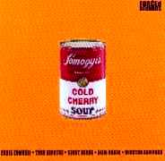

SOUPSONG HAS GONE HARDCOPY!
Buy one (or more) at amazon.com or barnesandnoble.com.
Release date: 12/28/2004.
* * *Click HERE to add a soup song--or your own 2 cents.
Or do you want to take another look at the homepage MENU?
Or do you want to SEARCH for something specific?
Or do you want to take another look at the homepage MENU?
Or do you want to SEARCH for something specific?
Composer Modest Moussorgsky to Nikolai Rimsky-Korsakov in a letter dated 8/15/1868:
"And another thing about German symphonic development. I tell you, our cold kvass soup is a horror to the Germans, and yet we eat it with pleasure. And their cold cherry soup is a horror to us, and yet it sends a German into ecstacy. In short, symphonic development is just like German philosophy and soup--all worked out and systematized. When a German thinks, he reasons his way to a conclusion. Our Russian brother, on the other hand, starts with a conclusion and then might amuse himself with some reasoning."
Musical Soup
| Composer/Singer | SoupSong |
|---|---|
| 10 CC | "Life is a Minestrone" from original soundtrack |
| Anon (Irish comic song) | "Mrs. Murphy's Chowder", discovered by Enid Karr from Concord, Massachusetts, and with permission from Terry Kluytmans of KIDiddles. Likewise for the hilarious follow-on, "Who Threw the Overalls in Mrs. Murphy's Chowder"--which, however, was recorded by Bing Crosby on his Shillelaghs & Shamrocks album |
| Anon (A couple French children's songs) | "À la soupe" À la soupe soupe soupe Au bouillon ion ion La soupe à l'oseille Zeille zeille zeille C'est pour les demoiselles La soupe à l'oignon Zon zon zon C'est pour les garçons
"Mange de la soupe"
[Refrain :]
Le vendredi, Maman fait la grande lessive, [Refrain]
Une jolie secrétaire tape à la machine, [Refrain ]
|
| Barber Samuel | The opening lines to his opera Vanessa: "Potage creme aux perles"--where doomed Erika is setting forth the most extravagant menu imaginable for her Aunt Vanessa's "20-year after" reunion with her former lover Anatol. |
| Barenaked Ladies | "I Love You" from the album Gordon (1992), which goes: "I like soup/and I like ice cream sandwiches too/I like fish sticks/but I love you." Many thanks to Bethany Gronberg for the contribution! |
| Blind Melon | Soup (1995) (last album before lead singer Shannon Hoon's death from a cocaine overdose) |
| The Bobs | There's a Nose-Ring in my Soup (1997) For full lyrics go to http://www.bobs.com/Lyrics.cgi?Nose_Ring. The refrain goes: There's a nose ring in my soup |
| Britten, Benjamin | The opera Billy Budd (1951) where Master-at-Arms James Claggert on the Indomitable, fatally stirred and disturbed by Billy's beauty and goodness, orders his creature Squeak to mess with Billy: "splash his soup," he says. |
| Brak (aka Valdemar H. Guerta) | The Brak Album's "Soup on a Stick" (2000) For kids: ...If I thought it'd make you love me/I'd put soup on a stick--soup on a stick.... |
| Buffett, Jimmy | "Barometer Soup" in Barometer Soup (1995) "I Play for Gumbo" in Beach House on the Moon (1999), described in the reviews as "sizzling and mouth watering," and contributed by Karen Bosse, Myrtle Beach, South Carolina. Thanks, Karen! |
| Carsten Trio Dahl | "Will You Make My Soup Hot and Silver" from the jazz album of the same name (1998) |
| Chapin, Tom | "Alphabet Soup" from Just for Kids, 1996 (many thanks for the contribution from Stewart Ridgeway of Lacey, Washington). Oh yes, and click HERE to hear some of it. |
| Chapin, Tom | "Stone Soup" from Mother Earth, 1979 (many thanks for the contribution from Miriam Weiss from Astoria, NY). "You could stare at the skies for the rest of your life and eat only stone soup with a pocket knife...." |
| Charpentier, Gustave | In the melodramatic opera "Louise", the selfish, over-loving father comes home in Act I--almost surprising the young lovers--and gruffly demands, "Est-ce que la soupe est prete?"--Is the soup, symbol of an aggressively closed family circle, ready? |
| Chestnutt, Vic | "Onion Soup" |
| Chic | "Soup for One" disco hit from Best of Dance, Dance, Dance (1991): "Soup for one/Ain't no fun/When you're by yourself/Soup for one...." |
| Churchill, Frank, et al. | "The Music in Your Soup" written for but cut from the 1937 Walt Disney production of Snow White and the Seven Dwarfs. After Snow White clanks the soup kettle and calls "Supper!" all the dwarves swarm to the table, fill their bowls with soup, and start rhythmic slurping. Doc sings: "With a spoon, with a bowl, with the music in your soul, You can hear things up, with a dup dup dup, of the music in your soup. With a gulp, with a grin, get a wiggle on your chin. You can make things hum with a dum dum dum of the music in your soup." |
| Cibo Matto | "Miso, miso, miso, miso soup!" |
| Clark, Guy | "Cold Dog Soup" is the title song/hillbilly haiku of the Texas singer-songwriter's Cold Dog Soup 1999 album, |
| compilation | Planet Soup, composed of 3 CDs: "Gazpacho," "Tiga Madje," and "Mulligatawny" |
| Conti, Raffy | "The Soupsong" (sung to the tune of "Polly Wolly Doodle All The Day")
Oh I had some tea and soup called pea. |
| Crimpshine | Duct Tape Soup (1998) |
| Dead Kennedys | "Soup is Good Food" Frankenchrist (1985)--a truly visceral anthem for the working man in the computer age.
Soup is good food-(We don't need you any more)
|
| Diamond, Neil | "Porcupine Pie" (early 1960s)Porcupine Pie, Porcupine Pie, Porcupine Pie |
| DJ Food | "Turtle Soup" from Refried Foods (1997) |
| DJ Soup | "Bowlasoup" from Souperloops (1999) |
| Double Trouble | Soup to Nuts (1996) |
| Dr. Hook | Wonderful Soup-Stone, from Sylvia's Mother (1971), with lyrics by children's poet Shel Silverstein. It goes like this:
"Hanging from a string in my momma's kitchen, back in the hard-time days |
| Dr. Hook | chorus from "Roland the Roadie" (1976)--another great one from classic mystery writer Jill McGown (www.jillmcgown.com), who says, and I agree, it shows "Dr. Hook had a mystical attachment to the stuff":
"Now some folks loves ham hocks
|
| Dylan, Bob | "Wiggle, Wiggle," on Under the Red Sky (1990) Generally acknowledged to be his worst lyric, the verse goes, "Wiggle wiggle wiggle, like a bowl of soup
|
| Egyptian Folksong, by Baheega Sidky Rasheed (1901) |
"The Lentil Soup or, transliterated, "Ara wan til Âds The lentil soup turned stiff and cold,
|
| 5 Chinese Brothers | Stone Soup (1995) |
| Gaillard, Slim "Bulee" (of "Flat Foot Floogie" fame in 1938) | "Avocado Seed Soup Symphony" |
| Goggin, Dan (author and composer of Nunsense, 1984) | "Soup's On (The Dying Nun Ballet)" |
| Hartford, John (note also that it was Glen Campbell, taping Hartford's lyrics a few months later, who popularized it) |
"Gentle on my Mind" (1967)
|
| Hemworth, Wade (Canadian folk-song composer) |
"The Black Fly"
|
| Hendrix, Jimi | Voodoo Soup (MCA's release of Jimi's leftover recordings) |
| Hoodoo Gurus | Electric Soup (1992) |
| Hot Soup! | "Soup"--about winter days and even includes a recipe from grandma (2000) |
| Inhouse | The Beautiful Soup |
| King, Carole | "Chicken Soup with Rice" from Really Rosie (1975), based on Maurice Sendak's "Really Rosie Starring the Nutshell Kids" |
| King Crimson | "The World's My Oyster Soup Kitchen Floor Wax Museum" from ConstruKction of Light (2000) |
| Loop Guru | Amrita...All these and the Japanese Soup Warriors (1996) |
| Lovett, Lyle (on Austin City Limits TV) |
"Cold Dog Soup," by songwriter Guy Clark (5/26/2000) |
| Lyric | "Lookin' on the Inside (Chocolate Soup)" (1998) |
| MacColl, Kristy | "Autumngirlsoup" on Tropical Brainstorm (2000)
"I'm an Autumn girl on the endless search for summer/'Cause I need some love to cook my frozen bones"
|
| Marcus, Richard | Chicken Soup (1997-published in The New York Times)
Chicken soup is more than just soup. |
| Marillion, British progressive rock group, named after J.R.R. Tolkien's Silmarillion |
"Gazpacho" on Afraid of Sunlight (1990s)
Is it love or is it surgery
|
| Martin, Dean | "That's Amore," where he extols Pasta e Fagiole soup |
| Massenet, Jules | Manon, Act II (1984): Mezzo Giulietta Simionato recalls a production with Gigli and Favero--"I had to carry on a tureen of soup in the second act. One evening, the rug on the floor had not been nailed down properly, and I slipped and almost fell. I avoided spilling the soup but completely missed my line ("E la cena, signor.") It was real soup, by the way, prepared in the biffi Scala restaurant. The comprimari often ended up eating food that had been prepared for the performance. I never did, though, for I was always a very frugal eater." |
| McCutcheon, John | "Soup" from Wintersong (1995), that tells about his grandmother making soup on cold winter days. |
| Meat Beat Manifesto | The Matrix soundtrack (1998)--"Prime Audio Soup" electronic rock |
| Mephiskapheles | "Turtle Soup" on its Maximum Perversion ska album (1997). |
| Minty Fresh | Swoop Soup (1997) |
| Moxy Fruvous, Canadian Band | "The Present Tense Tureen" from Wood and "Johnny Saucep'n" from B(which latter mentions goat's head soup and vichyssoise among about a thousand other food dishes). Thanks for the contribution to Amanda Eisen of Silver Spring, Maryland! |
| Mulford, Zoe | "Stock," which is all about using leftovers to make soup but on another level about second chances in life: "This cabbage has seen better days,
|
| Mumbo Gumbo | Deep Soup (1994) |
| Nikander, K.A. (Swedish songwriter, 1799-1839) |
King Erik, or "Kung Erik," whose brother Johan poisoned him with Pea Soup to get the throne in 1550King Erik heard in dreams that night
|
| Nirvana | posthumous Seattle sound "You Know You're Right" (2002)
I will never bother you/I will never promise you/I will never follow you/I will never bother you/Never speak a word again/I will crawl away for good/I will move away from here/You don't be afraid of fear/No thought was put into this/I alway knew it would come to this/Things have never been so swell/I have never failed to feel/Pain.
|
| Nuclear Rabbit | ska-punk-funk-jazz Vicuna's "Soup" (1997) |
| Olu Dara | "Strange Things Happen Every Day" from his Neighborhoods album evoke memories of his grandmother rocking him and singing to him (2000):Alabama cornbread dipped in Georgia buttermilk. Bought my woman a hat made from tapeworm silk. Uh-huh. Oh no, drink my soup with pride and fried...Yeah. Drink that soup, strange things happen every day. |
| Osbourne, Ozzie | A tribute album, entitled Bathead Soup, with cuts by Dweezil Zappa and Lisa Loeb, Vince Neil, Jason Bonham, and Motorhead's Lemmy Kilmister (2000) |
| Patterson, Bobby | "I'd Rather Eat Soup" from the R&B album of the same name (1998) |
| Phoetus | techno "Sparkling Soup" |
| Porter, Cole | "At Long Last Love" (1937), where he compares good turtle soup and the mock:Is it an earthquake or simply a shock?
|
| Pothead | Dessicated Soup (1995) |
| Prokofiev, Sergei | "The Love for Three Oranges" (1924), based on Carlo Gozzi's ridiculous 1761 comedy, features in its surreal, fairytale land a monstrously big cook wielding a knife and a deadly soup ladle, not to mention an evil Prime Minister Leandre and nasty royal niece Clarice plotting to do in the melancholy Prince to get the throne. Take-no-prisoners Clarice counsels opium or a bullet, but the more politically correct Leandre suggests he will feed the Prince a mixture of super-tragic prose that he'll chop up in his soup and slather on his bread so he'll die of hypochondria. |
| Rea, Chris | Soup of the Day from espresso logic (1996) |
| Rolling Stones | Goats Head Soup (1972) |
| Rossini, Gioachino (Italian composer, (1792-1868) |
The Barber of Seville, where Figaro, in Act 2, gets Dr. Bartolo's house keys, supposedly to fetch shaving utensils in the pantry--but actually to help acomplish the willing abduction of Rosina. When he crashes into the crockery and the sounds of breaking china are heard, Dr. Bartolo wails in distress over his broken tureen, drawing out the vowels painfully t-u-u-u-u-u-u-u-r-i-i-i-i-i-i-i-i-i-i-i-i-n-o-o-o-o-o-o-o-o-o-o-o-o! |
| Satie Erik (French composer, 1866-1925) |
"Peccadillos," part of his idiosyncratic "Children's Pieces for Piano," features a complete song that goes like this: "I love cabbage soup, but I love my darling mummy more
|
| Sebadoh | "Poop Soup" |
| Seeger, Pete | "Soup Song," on his Carry it On: Songs of America's Working People (1987). See entry under Maurice Sugar for the lyrics. Then there was his "A little a' this 'n' that," copyright 1991: My grandma, she can make a soup,
Thanks to Miriam Weiss of Astoria, New York, for this last contribution.
|
| Sherman, Allan | "Strangers in my Soup"...sung to "Strangers in the Night...which goes like this:"Strangers in my soup, that I can see there
|
| Shakira (Mebarek) | "Poem to a Horse" in Laundry Services (2001):"I'd rather eat my soup with a fork
|
| Shudder to Think | First Love, Last Rite's pop/rock "Automatic Soup" (1998) |
| Small Town Heroes | Human Soup (1996) |
| Snuff | Numb Nuts' punk "Soup of the Day" (2000) |
| Somogyi, Arnie  |
Cold Cherry Soup jazz album, celebrating Somogyi's Transylvanian roots (2001). This great double-bass player says about himself: "Apart from occasionally making bizarre radio programmes for the BBC, I work as a jazz musician. Visitors to your site may be interested in my CD 'Cold Cherry Soup.'. It is available through jazzcds.co uk, or my own website forgedrecords.com, where you can listen to streamed samples of the music and an find an authentic Hungarian recipe for meggyleves - cold cherry soup!" |
| Sondheim, Stephen | On Airway Food (to the tune, "Do I hear a waltz?"
The shiny stuff is tomatoes.
|
| Soul, David (of the 70s Starsky and Hutch fame) and Gardner McKay | "Black Bean Soup"
Many thanks to Mandy Giles, from Kirkland, Washington, for the contribution!And you to make it with me Honey won't you Be my love while love will stay And wear your ribbons for me
Boil those black beans, honey All I want...
Well I've been kicked in the head a few times |
| Strauss, Jr., Johann | Die Fledermaus (1874), where in the first act Rosalinde's maid Adele tries to get the evening off by pleading a sick aunt, to whom she must take soup--but is put off by Eisenstein who calls for his own soup with the trimmings from the Golden Lion:Eisenstein: Also geh, lauf ruber zum Goldenen Lowen und hol uns ein opulentes Abschiedsdiner! (Then go and run over to the Golden Lion and bring us a lavish good-bye dinner)
|
| Sugar, Maurice --see also Pete Seeger Robert Wyatt |
"Soup Song"--from working man's songs during the Depression era. The lyrics go: 1. I'm spending my nights in the flop house. I spending my days on the street. I'm looking for work but I find none. I wish I had something to eat. Soup, soup, they gave me a bowl of soup, soup, soup. Soup, soup, they gave me a bowl of soup.
|
| Temple, Shirley (composer Ray Henderson; lyricists Irving Caesar and Ted Koehler) | "Animal Crackers in my Soup" (from the film Curly Top, 1935)
Animal crackers in my soup, Monkeys & rabbits, loop da loop
|
| The Turtles | Turtle Soup (1970) |
| Turtle, Mock | "Soup of the Evening, Beautiful Soup" |
| The Twelve Caesars | (I'm Gonna) Kick You Out (1999), where they sing "I am what I am.../A man with a fork in a world of soup" |
| van Tol, Jacques | Wie heeft er suiker in de erwtensoep gedaan? (Who Put Sugar in the Pea Soup) is a
popular Dutch song, written in 1939 by Jacques van Tol (lyrics) and Lou Bandy
(music), and performed by Lou Bandy. For full lyrics (Dutch) and some nice pictures, see
http://www.leger1939-1940.nl/Liedjes/wieheeft.htm . Many thanks to Gerrit de Blaauw for the contribution and free translation of the first few lines:
Who put sugar in the pea soup?
|
| Verdi, Giuseppe | "La Forza del Destino" (1862), where the nasty friar Melitone at the convent Madonna degli Angeli, instead of feeding his soup to the poor in Act IV, Scene 1, abuses them--threatens them with his ladle--and finally kicks over the whole kettle and chases them from the courtyard. |
| Vibert, Luke | Big Soup |
| Webb, Jimmy (songwriter/singer) | "Red Soup" from the soundtrack of The Last Unicorn (1982) |
| Weird Al (Yanklovich) | The TV Show's "Talk Soup" (1995) |
| Williams (Sr.), Hank | "Jambalaya (On the Bayou)": "Jamabalaya and a crawfish pie and file gumbo/ 'Cause tonight I'm gonna see ma cheramio/ Pick guitar, fill fruit jar and be gay-o/ Son of a gun, we'll have big fun on the Bayou." |
| Wyatt, Robert | "Soup Song," on his Ruth is Stranger than Richard (1975). See entry under Maurice Sugar for the lyrics. Many thanks to Peter A. Barnes, Rochdale, England, for this contribution. |
| Yo La Tengo | "Turtle Soup," on the soundtrack of Book of Life (1999). |
| Zappa, Frank | "The Girl Wants to Fix Him Some Broth" (1971, 200 Motels); "Won Ton On" (1984, Thing Fish); and "Soup 'N Old Clothes" (1981, Shut Up 'N Play Yer Guitar--the last entry thanks to Peter Barnes who had to persuade me that it wasn't SOAP 'N Old Clothes) |
| Zimmerman, Bernd Alois | Die Soldaten opera, where in scene II of Act IV the lead takes his revenge on the officer who has stolen his love by slipping rat poison into his soup. (1965) |